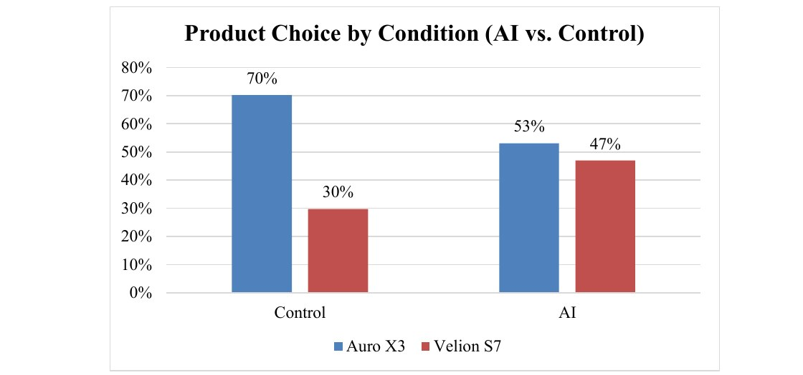
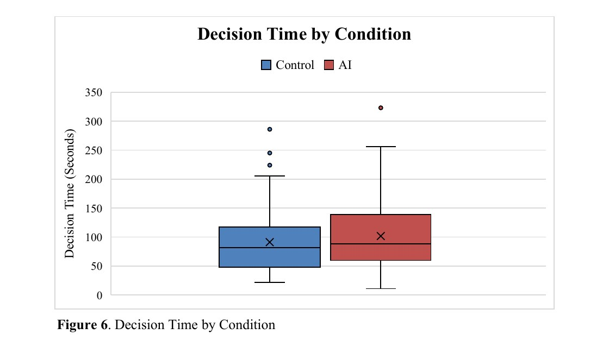
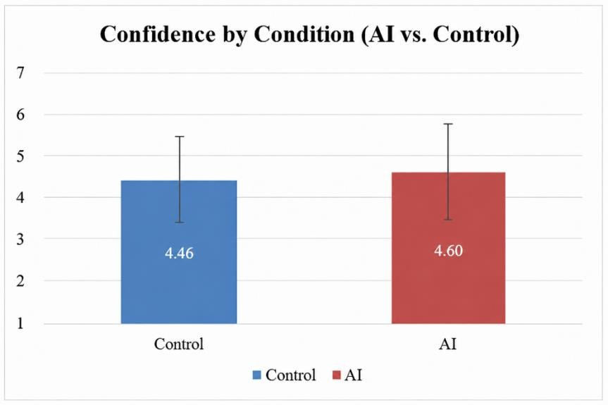

Research
Does an AI recommendation change what you buy?
Relevance. It is the clearest evidence I have of designing a study, running it properly and then reading the result honestly, including the part where my own hypothesis did not hold.
A while ago I typed something like "I don't know anything about vacuum cleaners, which one should I buy" into ChatGPT, and then followed the recommendation. I did not check the specs or compare anything, I went straight to the purchase page. I assumed I was not the only one, and nobody had tested what that does to how we decide, so I made it my thesis.

Method
A controlled between-subjects experiment with 192 participants. Everyone evaluated two pairs of wireless headphones. One group saw an AI recommendation, the other did not. I measured which product they chose, how long they took, and how confident they felt about the choice. Analysis in SPSS.
Findings
The recommendation shifted product choice. 47% of the AI group picked the recommended product against 30% in the control group, a 17 point difference, significant at p=.015. The two products were fictional, Auro X3 and Velion S7, so there was no brand preference carried into the task.

Decision time showed no significant difference either, and if anything the median ran slightly higher in the AI group rather than lower, with a wide spread in both conditions.

Confidence showed no significant difference either, 4.46 in the control group against 4.60 with the recommendation.

So people did not decide any faster and they did not feel any more certain, they simply chose differently, which on these results makes the recommendation a persuasion tool rather than a shortcut.
Why that was not the prediction
Dual-process theory and the heuristic-systematic model suggest you offload the thinking, decide faster and feel better about it. Only the first hypothesis held. Two things probably explain the rest. The AI group was looking at a structurally larger information environment, which may have cancelled out any time saved. And people in a research setting think more deliberately than people spending their own money, where leaning on a shortcut is more natural.
Limitations
The sample was a convenience one, 75% female and skewed young and educated, the brands were fictional and there was only a single product category, so the effect could look quite different for a higher stakes purchase or for someone less used to AI.
Why it matters now
Amazon Rufus, Google AI Overviews and Klarna are already steering millions of purchase decisions a day. Adobe Analytics reported a 1,200% increase in retail traffic from generative AI sources between mid 2024 and early 2025. The technology is ahead of the regulation and the evidence base is still thin.
The question I would ask next
AI shifts the decision. Whether it shifts it in a better direction is a separate question, and this experiment does not answer it. I measured what people chose and how sure they felt while choosing, not whether the product was right for them or whether they were still happy with it a month later. A recommendation that moves choice and raises satisfaction and one that moves choice and lowers it look identical in my data. Measuring satisfaction after the purchase instead of confidence during it is where I would take this next.